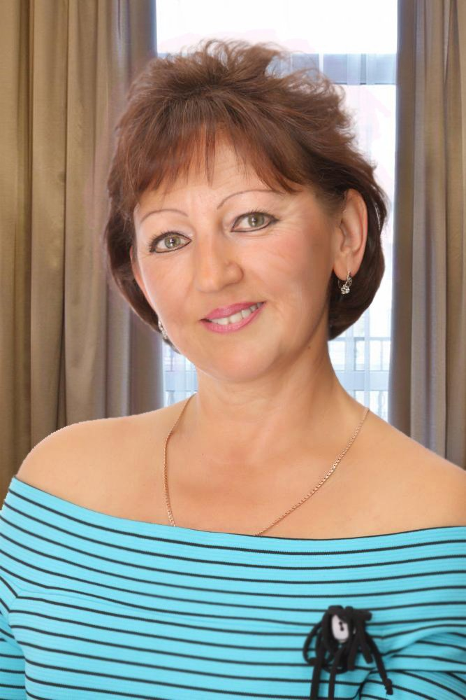

Как се избавих от бръчките за 1 месец:
моя малък секрет!
моя малък секрет!
 Добър ден, скъпи читатели!
Добър ден, скъпи читатели!
Днес искам да споделя с Вас удивителната история, как успях самостоятелно да се избавя от бръчките и отново да се почувствам млада, привлекателна и пълна с живот!
Името ми е Таня и сега съм на 47 години - разбира се, не се смятам за старица, но тези врагове за женската красота, като бръчките, в тази възраст започват активно да се месят в живота ми.
Това може да изглежда странно, но до скоро, аз някакси не им обръщах внимание, просто не ги забелязвах… Докато не се проведе поредната среща на класа (ние се срещаме редовно, на всеки 5 години). Тогава и забелязах колко по-стара изглеждам от съседката си по чин. И колко по-малко комплименти и внимание получавам от съучениците си.
Реших, че трябва да се избавя от тази “красота” и отпечатъка на многото години по моето лице! Защо ли първото, което ми дойде на ум беше за противовъзрастния крем. Изтичах до магазина, не съм дребнава - купих най-скъпите средства за зряла кожа, наивно мислейки, колкото по-скъпо - толкова по-добро. Минах един курс, после втори… Изгубих почти половин година, а нямаше никакви резултати. Разбира се, нещичко се попромени, но обкръжението ми не го забеляза.
Исках моментални резултати, затова се замислих за пластична операция. Разглеждах най-евтините варианти, но те за мен се оказаха доста скъпи… Аз и сама разбирах, че отдавайки предпочитанията си на най-евтините процедури или клиники, рискувам своята външност и здраве. На края се отчаях и не отидох никъде. Но не бездействах, започнах да преглеждам в интернет и да търся ефективно средство за подмладяване. Пред очите ми попадна този сайт . Като цяло, там получих полезна информация за застаряването на кожата, бръчките и как да се борим с тях. А тайната, по принцип е много проста - решението на проблема е в новата иновационна формула на крема против бръчки ProCollagen . Той не се продава в обикновените магазини, може да се купи само през интернет.
Защо аз избрах този сайт и този крем? Честно да си кажа - прегледах всички възможни форуми, посветени на тази тема, много често срещах коментари от жени, които препоръчваха това средство. Много от тях споделяха своите резултати, показваха снимки. Всичко ми внушаваше доверие. И реших да направя поръчка - какво ли пък толкова ще загубя?
На сайта оформих поръчката - всичко достатъчно бързо си го получих и започнах да нанасям крема сутрин и вечер, както беше написано в инстркцията.
И да Ви кажа честно, останах много доволна!
Резултатите с всеки изминат ден ме радваха все повече и повече!
Бръчките направо се изглаждаха, но това не беше единствената ми радост: цвета на лицето ми се променяше очевидно, кожата ми някакси се обновяваше! 2 седмици, след използване на крема, гледайки се в огледалото, аз разбрах какво означава “прасковена кожа”: лицето ми буквално се подобри, кожата придоби приятен равен прасков оттенък и започна да изглежда даже леко кадифена!Проверете, аз мога дълго да разказвам за своето преобразяване, всеки ден гледах в огледалото и вождах своето малко чудо!). Като цяло, аз използвах крема около 1,5 месеца и за това време, ще кажа без да преувеличавам, придобих ново лице! Загладиха се не само малките, но и дълбоките мимически бръчки, изчезнаха гънките, около носа и устните, устните ми се повдигнаха нагоре, изчезна двойната брадичка и шията ми стана просто идеална, без нито една лентичка!
Ето моя резултат:
| До  | След  |
Аз бях на седмото небе от щастие! Приятели и познати направо не ме познаваха, а един път даже ме объркаха за моята дъщеря))
Трябва ли да казвам, че в живота ми настъпи време за втори разцвет!) Аз съм свободна жена, децата ми са отраснали, а след това мое преобразяване се появиха мнооого поклонници!
И даже ми се струва, че като в младостта ми, отново се влюбих)).
Така, че мили момичета, нека си говорят, че външността - това е отражение на нашето вътрешно състояние, но се случва и обратното! Красива, спретната, цъфтяща жена, не може да не се усеща различно от прекрасно цвете!
Не мога да кажа, че всичко това го постигнах сама…. Аз знам, че основния мой приятел и мост към новата ми външност и новия ми живот, стана крема против бръчки ProCollagen . Този удивителен и прекрасен козметичен помощник е просто необходим за всяка съвременна жена!
Сега, аз препоръчвам това средство на своите приятелки и познати и получавам в отговор само думи на благодарност и възхищение! И затова реших, че ще направя всичко, за да може повече жени да научат за този фантастичен крем!
P.S. Оставям връзка към сайта , където е възможно да си го поръчате и да прочетете за всички подробности.
Момичета, тези от вас, които вече са използвали този чудесен крем “ProCollagen” , моля ви, споделете резултатите си! Много е интересно, как помага на другите!
Коментари (11) за “как се избавих от бръчките за 1 месец: моята малка тайна!”
Ще го кажа така - това си е качествено и професионално. Самата аз съм козметик, затова зная за какво говоря. Относно състава - всичко е натурално и действително е много полезно за стягане на кожата. Всичко, което сега се предлага в магазините е маркетингов ход, лъжа за купувачите. Нищо хубаво и уж ефективно няма в тях. Рекламата просто привлича бедничките жени. А това средство може да се купи само в интернет. Затова и много не са и чували нищо за това. Аз го изпробвах лично на себе си и горещо го препоръчвам!
Толкова се радвам, че все пак, за много момичета е известно това чудодейно средство! А също и за тези, които прочитайки този блог и научавайки за него са разбрали какво чудо е това! Желая на всички ви успехи, красота, любов и вечна младост!
Браво, Таня! Нямам думи! Изглеждате просто зашеметяващо. Ето това разбирам за реален резултат! А не тази красива картинка в рекламата на тонове химия, която наричат крем.
Аз, чрез собствен опит се убедих, че този крем “ProCollagen” е най-доброто средство за жената, която мечтае отново да стане млада и привлекателна! Аз съм на 42, а повече от 27 никой не ми дава! И всичко това за 1 месец използване на крема. Това действително е потресаващо!
Майка ми, преди година се сдоби с този крем на някакъв си семинар за красота. Ние тогава, дружно се посмяхме, как се е вързала на това, че това е просто явно обиране на пари….. Но след седмица, всички бяхме в шок: мам подмладя пред очите ни, бръчките се бяха умалили, подобряваше се и цвета на лицето. А след месец това беше просто друг човек! Ние, разбира се си взехме думите обратно! И сега знам, че когато тези проблеми дойдат и при мен (дано това да не е скоро))) - аз ще си имам готово отлично средство!
Статията е на 6+!!! Отдавна исках подобно средство против бръчките. Весе, много ти благодаря за съветите! Поръчах си го, чакам го, предвкусвам)))
А аз го ползвах, около 2 седмици и не усещайки особен резултат го зарязах, може би не правих всичко, както трябва, а може и да е заради особеностите на кожата ми, или още нещо… Но сега, помисляйки отново, пак ще го пробвам. Вашите отзиви направо ме вдъхновяват!
Мила , разбира се, трябва да се пробва! И не чакайте резултат всеки ден, кокорейки се в огледалото, а да си поставите конкретна цел и да стигнете с нея до края! Желая Ви успех!
Таня , искам много да Ви благодаря за Вашия блог и за това средство! Преди месец, аз прочетох Вашата история и още същата вечер си поръчах крема. За тези 3 седмици, лицето ми направо се преобрази, въпреки, че все още съм далече от идеала - мисля, че не трябва да се спира, но и сега, резултата го забелязват всички от обкръжението ми. И главното - аз, лично с всеки ден все повече и повече се радвам на отражението в огледалото!
Суперско нещо! Заедно с майка ми се занимаваме с него, вече месец и половина, като цяло на двете точно 15 години ни намалиха! Must have! )) ))
))
Кремът “ProCollagen” действително прави чудеса! Аз съм на 61 години и в тази възраст да мечтаеш за втора младост е нереално, а за много - просто неприлично….Но само не и за мен! По съвет на дъщеря ми, аз 3 месеца ползвах този крем и това, което се получи с лицето ми, може да се нарече истинско чудо! Ще го кажа просто: повече никой от моите близки и приятели не иска да ме нарича бабичка!!!
Светла Влайкова , Вие сте стра-хот-на!!! Такива истории мнооого мотивират! Направо, още сега си поръчвам Вашия крем против бръчки)
Ще го кажа така - това си е качествено и професионално. Самата аз съм козметик, затова зная за какво говоря. Относно състава - всичко е натурално и действително е много полезно за стягане на кожата. Всичко, което сега се предлага в магазините е маркетингов ход, лъжа за купувачите. Нищо хубаво и уж ефективно няма в тях. Рекламата просто привлича бедничките жени. А това средство може да се купи само в интернет. Затова и много не са и чували нищо за това. Аз го изпробвах лично на себе си и горещо го препоръчвам!
Толкова се радвам, че все пак, за много момичета е известно това чудодейно средство! А също и за тези, които прочитайки този блог и научавайки за него са разбрали какво чудо е това! Желая на всички ви успехи, красота, любов и вечна младост!